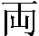

奥様：大変御無沙汰致しました。别に忙しいと云ふ訳でもないが盆槍でブラブラして居るからこー云ふ結果になったのです。大昔、餓鬼が「ドロップス」をいただいて其の内容を食べて仕舞ひ、又别ものを入れて又食べて仕舞ひそう云ふ風に四五回、やりました。併し僕は今に御祛を申し上げます。宓になまけなものです、御免下さい。此頃、何か書かうと頗る思って居りますが何も書けません。政府と其の犬達に罐詰にされて社仝との接觥は殆んど出瘄ませなんだ、其上小供は病氘 き。住ひは北向だから小供に不適當かも知りません。併し転居する氘も出ません。瘄年の春頃に又漂流しようかとも思って居ります。が、それもあてにならないかも知りません。小供は厄介なものだ。有ると色々な邪魔をします。あなたはどう思ひますか？僕はこの頃殆んど年中小供の爲めに奔走して居ります。併し既にうんだのだから矢張り育てなければ成りません、つまりむくひですから憤慨もそーなかった。上海は不相変さびしい、内山書店には漫談はそう振はないが景氘は私から見れば、ほかの店よりもよい様です、老板も忙しい。私の小説は井上紅梅氏に訳されて改造社から出版する様になりました。增田君は頗る意外にうたれたが私も頗る意外でありました。併し訳したいと云ふのだから私もいかんとは云へません。ここに于いて訳されました。あなたも屹度二元搾り取られるだろーが私の罪だと思はないで下さい、增田君が早くやったら善いのに。支那には上海は寒くなり、北京ではもう雪が降ったそうです。東京は如何がですか？私は殆んど東京の天氘の有様をわすれて仕舞ひました。御主人様はまだ子守していますか？何時に活動しだしますか？私も子守をして居ります。そうすると御互に遇ふ事が出瘄ません。
き。住ひは北向だから小供に不適當かも知りません。併し転居する氘も出ません。瘄年の春頃に又漂流しようかとも思って居ります。が、それもあてにならないかも知りません。小供は厄介なものだ。有ると色々な邪魔をします。あなたはどう思ひますか？僕はこの頃殆んど年中小供の爲めに奔走して居ります。併し既にうんだのだから矢張り育てなければ成りません、つまりむくひですから憤慨もそーなかった。上海は不相変さびしい、内山書店には漫談はそう振はないが景氘は私から見れば、ほかの店よりもよい様です、老板も忙しい。私の小説は井上紅梅氏に訳されて改造社から出版する様になりました。增田君は頗る意外にうたれたが私も頗る意外でありました。併し訳したいと云ふのだから私もいかんとは云へません。ここに于いて訳されました。あなたも屹度二元搾り取られるだろーが私の罪だと思はないで下さい、增田君が早くやったら善いのに。支那には上海は寒くなり、北京ではもう雪が降ったそうです。東京は如何がですか？私は殆んど東京の天氘の有様をわすれて仕舞ひました。御主人様はまだ子守していますか？何時に活動しだしますか？私も子守をして居ります。そうすると御互に遇ふ事が出瘄ません。

方とも漂流し出したら何処かに遇ふ様になるのでありましょう。 草々頓首魯迅 十一月七日よる一時
[译文]
夫人：久疏问候。虽说不见得太忙，但悠悠忽忽地闲蹚着，也就成了这个结果。馋鬼收到的水果糖，早已吃光，盒子装进别的食品，也吃光了，如此已四五次。可我现在才向你致谢，实在太懒，尚希见谅。近来，很想写点东西，可什么也不能写。政府及其狗们，把我们封锁起来，几与社会隔绝。加以孩子连续生病，也许寓所朝北，对孩子不适宜罢。但并未打算迁居。我想，明年春天又要漂流罢，不过那也不一定。孩子是个累赘，有了孩子就有许多麻烦。你以为如何？近来我几乎终年为孩子奔忙。但既已生下，就要抚育。换言之，这是报应，也就无怨言了。上海仍寂寞，内山书店的漫谈虽已不太热闹，但我看，生意似乎仍比别的店铺要好，老板也很忙。我的小说已被井上红梅氏译出，将由改造社出版，使增田兄受到意外的打击，我也甚感意外。既然别人要翻译，我也不能说不行。就这样译出来了。你也一定会被榨取二元钱[49]的。请你不要认为这是我的罪过。增田兄早点译出来就好了。在中国，上海已转冷，据说北京已下雪，东京如何？我几乎全忘记了东京的气候。你先生还是在家看孩子吗？何时才出去活动？我也是在家看孩子。这样彼此也就不能见面了。倘使双方都出来漂流，也许会在某地相遇的。 草草顿首
鲁迅 十一月七日夜一时
注 释
[48] 此信据1937年6月日本改造社出版《大鲁迅全集》第七卷所载编入。山本初枝（1898—1966），笔名幽兰，日本歌人，中国文学爱好者。1931年与鲁迅结识。曾写过一些不满日本军国主义和怀念鲁迅的短歌。
[49] 当时井上红梅翻译的《鲁迅全集》定价二日元。